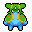
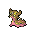

Pokédex / #423
Gastrodon #423
WaterGround
Long ago, its entire back was shielded with a sturdy shell. There are traces of it left in its cells.
Generation 4 · Sinnoh

Stats
| Attack | 83 | |
|---|---|---|
| Defense | 68 | |
| Sp. Atk | 92 | |
| Sp. Def | 82 |
In the wild
| Wild level | 40–50 |
|---|---|
| HP | 111 |
| Experience | 10 |
| Egg groups | Water 1, Amorphous |
Evolution
- Evolves from Shellos at level 35.
Moves
| Level | Move | Type | Category | Power | Energy | Cooldown | Effect | |
|---|---|---|---|---|---|---|---|---|
| 1 | Water Gun | Water | Special | 40 | 45 | 9s | Water Gun inflicts damage and has no secondary effect. | |
| 5 | Harden | Normal | Status | – | 70 | 60s | Harden raises the user's Defense by one stage. | |
| 10 | Mud-Slap | Ground | Special | 20 | 30 | 10s | Mud-Slap deals damage and lowers the target's Accuracy by one stage. | |
| 15 | Water Pulse | Water | Special | 60 | 65 | 9s | Water Pulse deals damage and has a 20% chance of confusing the target. | |
| 20 | Ancient Power | Rock | Special | 60 | 70 | 14s | Ancient Power inflicts damage and has a 10% chance of raising all of the user's stats by one stage. | |
| 25 | Body Slam | Normal | Physical | 85 | 85 | 13s | Body Slam deals damage and has a 30% chance of paralyzing the target. | |
| 30 | Muddy Water | Water | Special | 9 | 100 | 22s | Muddy Water deals damage and has a 30% chance of lowering the target's Accuracy by one stage. | |
| 40 | Dig | Ground | Physical | 80 | 100 | 20s | Dig does damage and has no secondary effect. | |
| 45 | Liquidation | Water | Physical | 85 | 85 | 12s | The user slams into the target using a full-force blast of water. It has a 20% chance of lowering the target's Defense and Special Defense by one stage each. | |
| 50 | Earth Power | Ground | Special | 9 | 100 | 21s | Earth Power deals damage and has a 10% chance of lowering the target's Special Defense by one stage. | |
| 55 | Surf | Water | Special | 90 | 100 | 21s | Surf inflicts damage and has no secondary effect. | |
| 60 | Rain Dance | Water | Status | – | 100 | 60s | Raind Dance raises the user's Attack and Defense by one stage. | |
| 65 | Earthquake | Ground | Physical | 50 | 110 | 23s | Earthquake deals damage. | |
| 70 | Hydro Pump | Water | Special | 110 | 120 | 27s | Hydro Pump inflicts damage and has no secondary effect. |
Field abilities
Rock SmashHeadbuttFlashStrengthDig
Special abilities
Sticky Hold
Egg moves
Acid ArmorAmnesiaBrineClear SmogCounterCurseFissureMementoMirror CoatMistSludgeSpit UpStockpileSwallowYawn
Technical machines
BlizzardDouble TeamEarthquakeFacadeHailHidden PowerHyper BeamIce BeamProtectRain DanceRestRock SlideRock TombSandstormSecret PowerSludge BombSubstituteToxicWater Pulse
Drops
| Item | Amount | Chance | |
|---|---|---|---|
| razor fang | 1 | 100% | |
| water gem | 1–10 | 100% | |
| pot of water | 1 | 28% | |
| blue sphere | 1 | 23.3% | |
| cutting fang | 1 | 14% | |
| onigiri | 1–5 | 5% | |
 | gastrodon doll | 1 | 0.1% |
| Splash Plate | 1 | 0.05% | |
| held mystic water | 1 | 0.02% |